<ion-side-menus enable-menu-with-back-views="false">
  <ion-side-menu-content>
    <ion-nav-bar class="bar-clear">
      <ion-nav-back-button>
      </ion-nav-back-button>

      <ion-nav-buttons side="left">
        <button  class="button button-clear basket" menu-toggle="left"> 
            
        </button>
      </ion-nav-buttons>

    </ion-nav-bar>

    <ion-nav-view name="menuContent"></ion-nav-view>
  </ion-side-menu-content>

  <ion-side-menu side="left">
    <ion-header-bar class="bar-stable">
      <h1 class="title top"></h1>
    </ion-header-bar>

    <ion-content class="dark">
      <ion-list class="list">
        <ion-item class="sec" menu-close href="#/app/home">      
            
        </ion-item>       
        <ion-item class="sec" menu-close href="#/app/my_groups">
          
        </ion-item>
        <ion-item class="sec" menu-close href="#/app/groups">
          
        </ion-item>
        <ion-item class="sec" menu-close href="#/app/new_group">
          
        </ion-item>
      </ion-list>
    </ion-content>
  </ion-side-menu>
</ion-side-menus>
